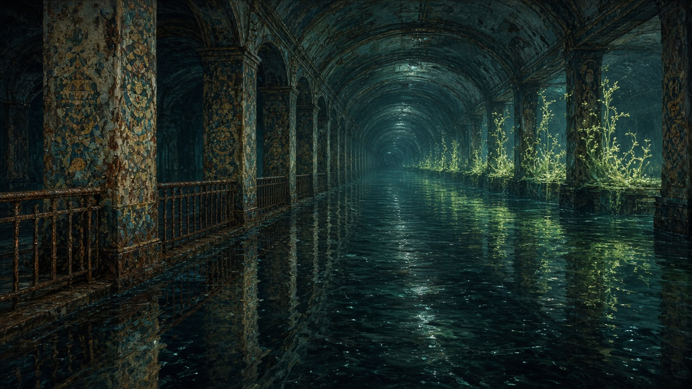

Часть вторая
Василиса и Левиафан. Часть 2
Текст пока закрыт.
Скоро

Продолжение выйдет позже. Оглавление уже есть, читать пока нельзя.
Чтение недоступно · скоро
← Часть 1
Оглавление
Пока без текста.
- ГЛАВА 1. Чёрная вода
- ГЛАВА 2. Северный ветер
- ГЛАВА 3. Станция дофамина
- ГЛАВА 4. Сайлент Петербург
- ГЛАВА 5. Архив
- ГЛАВА 6. Апгрейд
- ГЛАВА 7. Сфинксы
- ГЛАВА 8. Часовня
- ГЛАВА 9. Сердце Левиафана
- ГЛАВА 10. Спираль